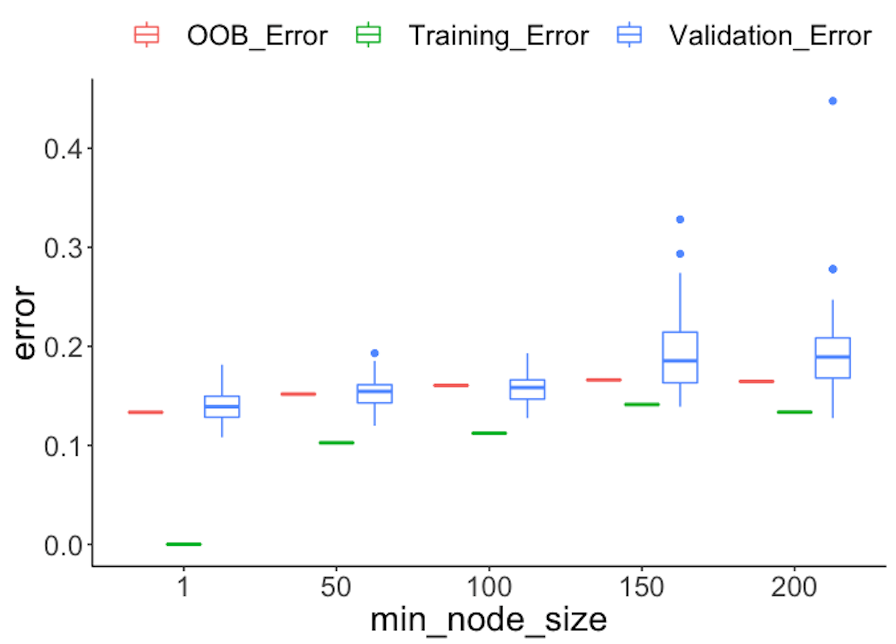
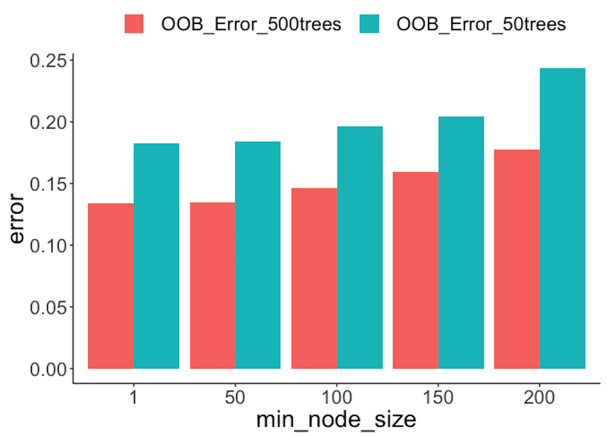

The random forest model provides a concept named out-of-bag error that plays a similar role as the hold-out method. Let’s revisit how it works.
Suppose that we have a training dataset of \(5\) instances (IDs as \(1,2,3,4,5\)). A random forest model with \(3\) trees is built. The \(3\) Bootstrapped datasets are shown in Table 16.
Table 16: Three trees and the bootstrapped datasets
| Tree | Bootstrap |
|---|---|
| \(1\) | \(1,1,4,4,5\) |
| \(2\) | \(2,3,3,4,4\) |
| \(3\) | \(1,2,2,5,5\) |
Since Bootstrap randomly selects samples from the original dataset to form Bootstrapped datasets, some data points in the original dataset may not show up in the Bootstrapped datasets. These data points are called out-of-bag samples (OOB) samples . For instance, for the random forest model that corresponds to Table 16, the OOB samples for each tree are shown in Table 17.
Table 17: Out-of-bag (OOB) samples
| Tree | OOB samples |
|---|---|
| \(1\) | \(2,3\) |
| \(2\) | \(1,5\) |
| \(3\) | \(3,4\) |
The data points that are not used in training a tree could be used to test the tree. The errors on the OOB samples are called the out-of-bag errors . The OOB error can be calculated after a random forest model has been built, which seems to be computationally easier than cross-validation. An example to compute the OOB errors is shown in Table 18.
Table 18: Out-of-bag (OOB) errors
| Data ID | True label | Tree \(1\) | Tree \(2\) | Tree \(3\) |
|---|---|---|---|---|
| \(1\) | \(C1\) | \(C1\) | ||
| \(2\) | \(C2\) | \(C1\) | ||
| \(3\) | \(C2\) | \(C2\) | \(C2\) | |
| \(4\) | \(C1\) | \(C1\) | ||
| \(5\) | \(C2\) | \(C2\) |
We can see that, as the data instance (ID = \(1\)) is not used in training Tree \(2\), we can use Tree \(2\) to predict on this data instance, and we see that it correctly predicts the class as \(C1\). Similarly, Tree \(1\) is used to predict on data instance (ID = \(2\)), and the prediction is wrong. Overall, the OOB error of the random forest model is \(1/6\).
The OOB error provides a computationally convenient approach to evaluate the random forest model without using a testing dataset or a cross-validation procedure. A technical concern is whether this idea can scale up. In other words, are there enough OOB samples to ensure that the OOB error is a fair and robust performance metric?
Recall that, for a random forest model with \(K\) trees, each tree is built on a Bootstrapped dataset from the original training dataset \(D\). There are totally \(K\) Bootstrapped datasets, denoted as \(B_{1,} B_{2}, \ldots, B_{K}\).
Usually, the size of each Bootstrapped dataset is the same size (denoted as \(N\)) as the training dataset \(D\). Each data point in the Bootstrapped dataset is randomly and independently selected. Therefore, the probability of a data point from the training dataset \(D\) missing from a Bootstrapped dataset is129 Because there are \(N\) independent trials of random selection, for a data point not to be selected, it has to be missed \(N\) times. And the probability for “not to be selected” is \(\left(1-\frac{1}{N}\right)\).
\[\left(1-\frac{1}{N}\right)^{N}.\]
When \(N\) is sufficiently large, we have
\[\lim _{N \rightarrow \infty}\left(1-\frac{1}{N}\right)^{N}=e^{-1} \approx 0.37.\]
Therefore, roughly \(37\%\) of the data points from \(D\) are not contained in a Bootstrapped dataset \(B_i\), and thus, not used for training the tree \(i\). These excluded data points are the OOB samples for the tree \(i\).
As there are \(37\%\) of probability that a data point is not used for training a tree, we can infer that, on average, a data point is not used for training about \(37\%\) of the trees130 Note that the assumption is the Bootstrapped dataset has the same size as the original dataset, and the sampling is with replacement.. In other words, for each data point, in theory \(37\%\) of the trees are trained without this data point. This is a sizeable amount of data points, ensuring that the OOB error could be a stable and accurate evaluation of the model’s performance on future unseen testing data.
We design a numeric study to compare the OOB error with the error obtained by a validation procedure and the error estimated on the training dataset. The three types of error rates are plotted in Figure 87.
 Figure 87: Comparison of different types of error rates
First, we split the dataset into two halves: one for training and one for testing.
library(dplyr)
library(tidyr)
library(ggplot2)
require(randomForest)
set.seed(1)
library(RCurl)
url <- paste0("https://raw.githubusercontent.com",
"/analyticsbook/book/main/data/AD.csv")
data <- read.csv(text = getURL(url))
target_indx <- which(colnames(data) == "DX_bl")
data[, target_indx] <- as.factor(paste0("c", data[, target_indx]))
rm_indx <- which(colnames(data) %in% c("ID", "TOTAL13", "MMSCORE"))
data <- data[, -rm_indx]
para.v <- c(1, 50, 100, 150, 200)
results <- NULLThen, we build a set of random forest models by tuning the parameter nodesize, and obtain the OOB errors of the models.
# OOB error
for (ipara in para.v) {
rf <- randomForest(DX_bl ~ ., nodesize = ipara, data = data)
# nodesize = inodesize
results <- rbind(results, c("OOB_Error",
ipara, mean(rf$err.rate[, "OOB"])))
}We also use the random sampling method to evaluate the errors of the models.
# Validation error
for (ipara in para.v) {
for (i in 1:50) {
train.ix <- sample(nrow(data), floor(nrow(data)/2))
rf <- randomForest(DX_bl ~ ., nodesize = ipara,
data = data[train.ix,
])
pred.test <- predict(rf, data[-train.ix, ], type = "class")
this.err <- length(
which(pred.test != data[-train.ix, ]$DX_bl))/length(pred.test)
results <- rbind(results, c("Validation_Error", ipara, this.err))
}
}Then, we obtain the training errors of the models.
# Training error
for (ipara in para.v) {
rf <- randomForest(DX_bl ~ ., nodesize = ipara, data = data)
# nodesize = inodesize
pred <- predict(rf, data, type = "class")
this.err <- length(which(pred != data$DX_bl))/length(pred)
results <- rbind(results, c("Training_Error", ipara, this.err))
}
colnames(results) <- c("type", "min_node_size", "error")
results <- as.data.frame(results)
results$error = as.numeric(as.character(results$error))
results$min_node_size <- factor(results$min_node_size,
unique(results$min_node_size))
ggplot() + geom_boxplot(data = results,
aes(y = error, x = min_node_size,
color = type)) +
geom_point(size = 3)Figure 87 shows that the OOB error rates are reasonably aligned with the testing error rates, while the training error rates are deceptively smaller.
The following R code conducts another numeric experiment to see if the number of trees impacts the OOB errors. In particular, we compare \(50\) trees with \(500\) trees, with their OOB errors plotted in Figure 88. On the other hand, we also observe that by increasing the number of trees, the OOB error decreases. This phenomenon is not universal (i.e., it is not always observed in all the datasets), but it does indicate the limitation of the OOB error: it is not as robust as the random sampling or cross-validation methods in preventing overfitting. But overall, the idea of OOB is inspiring.
para.v <- c(1, 50, 100, 150, 200)
results <- NULL
# OOB error with 500 trees
for (ipara in para.v) {
rf <- randomForest(DX_bl ~ ., nodesize = ipara, ntree = 500,
data = data)
# nodesize = inodesize
results <- rbind(results, c("OOB_Error_500trees", ipara,
mean(rf$err.rate[,"OOB"])))
}
# OOB error with 50 trees
for (ipara in para.v) {
rf <- randomForest(DX_bl ~ ., nodesize = ipara, ntree = 50,
data = data) # nodesize = inodesize
results <- rbind(results, c("OOB_Error_50trees", ipara,
mean(rf$err.rate[,"OOB"])))
}
colnames(results) <- c("type", "min_node_size", "error")
results <- as.data.frame(results)
results$error = as.numeric(as.character(results$error))
results$min_node_size <- factor(results$min_node_size,
unique(results$min_node_size))
ggplot() + geom_boxplot(data = results,
aes(y = error, x = min_node_size,
fill = type)) +
geom_bar(stat = "identity",position = "dodge") Figure 88: OOB error rates from random forests with a different number of trees